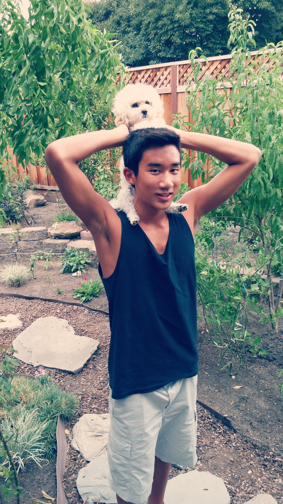

"The limits of my language means the limit of my world." -Ludwig Wittgenstein
First and foremost, thank you for taking the time to come visit my personal website. My name is Jia-Shu (Joseph) Chen, and I will be entering my senior year at Santa Teresa High School. As I began to accept the reality that I would soon lose the label of "child" very soon, I decided that not only did I want to showcase the person I've become, but I wanted to reflect on the events and achievements that have built the person I am today. While the person before you has many pieces of his life held together by spit and duct tape and is very much still a work in progress, please bear with me, and remember that every project needs to eventually be released to be subjected to the world's critiques. So, without further ado, I am Jia-Shu (Joseph) Chen. Data and lab researcher, swimmer, MUNer, developing programmer, and most importantly, student.
Position: Research Assistant
Experiment Background: Working alongside Justin Morrissette and Sophia Brown, under Dr. Maria Roselle Abraham, at Johns Hopkins Medical Institute, the experiment focused on finding an alternate procedure to repair injured cardiovascular tissue from a myocardial infarction that would lead to successful scar formation. The procedure being examined utilized anti-inflammatory macrophages to alter the typical pro-inflammatory response into an anti-inflammatory response.
Position: Data Researcher
Position Background: The overall main objective of the stealth start up company is to predict global macro risks using artificial intelligence. The algorithms and Big Data are able to provide a platform geared towards predicting macro risks such as economic crashes, labor strikes, and riots for example. Being the data researcher, I followed up on many of the generated predictions to ensure accuracy and organized data sets around the predictions and events. Additionally, I write research papers and edit investor briefings around important corporate event.